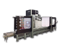

|

Desde final dos anos 40 em Vitoria-Gasteiz,
iniciou desenvolvendo fresadoras e centros
de usinagem, com a qualidade que só a ZAYER
pode oferecer, com mais de 60 anos
proporcionando aos seus clientes o melhor de
seu espírito empreendedor e capacidade de
inovação.
ZAYER originado em uma oficina de 200m2,
onde após dois anos de intensa dedicação,
vieram os primeiros modelos de produtos. O
progressivo crescimento da atividade levou a
transferência em 1957 para Betoño, onde foi
construído as primeiras instalações de
grande capacidade, o resultado do que é hoje
a ZAYER.
Atualmente, existem 220 colaboradores, está
grande equipe, realiza seu trabalho em
20.000 m2 que compõem a nossa sede. Em 2010
foram ampliadas as Instalações para
construir máquinas de até 13 m de altura.
BANCADA FIJA PRODUTOS
20KF /
20KFU
X: 2.700 - 4.700 mm
Y: 1.250 (1.500)* mm
Z: 1.000 (1.500)* mm
Fresadoras y centros de mecanizado
horizontal y vertical de bancada fija
30KF /
30KFU
X: 2.700 - 4.700 mm
Y: 1.250 (1.600)* mm
Z: 1.500 (2.000)* mm
Fresadoras y centros de mecanizado
horizontal y vertical de bancada fija.
20KFG
X: 1.350 - 1.850 - 2.500 mm
Y: 1.250 (1.500)* mm
Z: 1.000 (1.500)* mm
Centros de mecanizado horizontal y vertical
de bancada fija, mesa giratoria y palets.
30KFG-AR
X: 1.350 - 1.850 - 2.500 mm
Y: 1.250 (1.600)* mm
Z: 1.500 (2.000)* mm
Centros de mecanizado horizontal y vertical
de bancada fija, mesa giratoria y palets.

X: 2.700 - 7.700 mm
Y: 1.250 (1.600)* mm
Z: 1.500 (2.000)* mm
Fresadoras y centros de mecanizado
horizontal y vertical de bancada fija.
XIOS

X: 3.000 - 5.000 mm
Y: 1.200 (1.500)* mm
Z: 1.200 (1.600-2.000)* mm
Fresadoras y centros de mecanizado
horizontal y vertical de bancada fija.
COLUMNA MOVIL PRODUTOS
20KC /
20KCU
X: 3.000 - 15.000 mm
Y: 1.250 (1.500)* mm
Z: 1.500 (2.000-2.500-3.000)* mm
Fresadoras y centros de mecanizado
horizontal y vertical de columna móvil, mesa
independiente.
30KC-AR / 30KCU-AR
X: 3.000 - 15.000 mm
Y: 1.250 (1.600-2.000)* mm
Z: 2.000
(2.500-3.000-3.500-4.000-5.000-6.000)* mm
Fresadoras y centros de mecanizado
horizontal y vertical de columna móvil, mesa
independiente.
60KC /
60KCU
X: 4.000 - 24.000 mm
Y: 1.600 (2.000)* mm
Z: 4.000 (5.000-6.000)* mm
Fresadoras y centros de mecanizado
horizontal y vertical de columna móvil, mesa
independiente.
20KM / 20KMU
X: 2.400 - 3.400 mm
Y: 1.250 (1.500)* mm
Z: 1.000 (1.500)* mm
Fresadoras y centros de mecanizado
horizontal y vertical de columna móvil,
mesa-bancada fija.
20KMC / 20KMCU
X: 4.200 - 10.200 mm
Y: 1.250 (1.500)* mm
Z: 1.000 (1.500)* mm
Fresadoras y centros de mecanizado
horizontal y vertical de columna móvil,
mesa-bancada fija.
30KM / 30KMU
X: 2.400 - 3.400 mm
Y: 1.250 (1.600)* mm
Z: 1.500 (2.000)* mm
Fresadoras y centros de mecanizado
horizontal y vertical de columna móvil,
mesa-bancada fija.
30KMC / 30KMCU
X: 4.200 - 10.200 mm
Y: 1.250 (1.600)* mm
Z: 1.500 (2.000)* mm
Fresadoras y centros de mecanizado
horizontal y vertical de columna móvil,
mesa-bancada fija.
KMC-AR / KMCU-AR
X: 3.200 - 14.200 mm
Y: 1.250 (1.600)* mm
Z: 1.500 (2.000)* mm
Fresadoras y Centros de mecanizado
horizontal y vertical de columna móvil,
mesa-bancada fija.
KAIROS
X: 3.000 - 15.000 mm
Y: 1.200 (1.500)* mm
Z: 1.600 (2.000-2.500-3.000)* mm
Fresadoras y centros de mecanizado
horizontal y vertical de columna móvil, mesa
independiente.
PUENTES
PRODUTOS
TEBAS
X: 4.000 - 6.000 mm
Y: 3.750 mm
Z: 1.250 (1.500)* mm
Centros de mecanizado puente, travesaño fijo
y mesa móvil
KP-AR/KPU-AR
X: 2.700 - 4.700 mm
Y: 3.050 mm
Z: 1.100 (1.250)* mm
Fresadoras y Centros de mecanizado puente,
travesaño fijo y mesa móvil
KPC-AR/KPCU-AR
X: 4.000 - 12.000 mm
Y: 3.550 (3.750)* mm
Z: 1.100 (1.250)* mm
Fresadoras y Centros de mecanizado puente,
travesaño fijo y mesa móvil
FPC-AR/FPCU-AR
X: 4.000 - 12.000 mm
Y: 4.050 (4.050-4.550-5.050-5.550)* mm
Z: 1.250 (1.500)* mm
Fresadoras y Centros de mecanizado puente,
travesaño fijo y mesa móvil.
GANTRY
PRODUTOS
MEMPHIS/MEMPHIS U
X: 3.000 - 20.000 mm
Y: 2.000 (3.000-4.000)* mm
Z: 1.250 (1.500)* mm
Fresadoras y Centros de mecanizado Gantry,
portico móvil, travesaño fijo y mesa fija.
GPC-AR/GPCU-AR
X: 4.000 - 30.000 mm
Y: 4.050 (4.550-5.050-5.550)* mm
Z: 1.250 (1.500)* mm
Fresadoras y Centros de mecanizado Gantry,
pórtico móvil, travesaño fi
GMC-AR/GMCU-AR
X: 4.000 - 30.000 mm
Y: 4.050 (4.550-5.050-5.550)* mm
Z: 1.250 (1.500)* mm
Fresadoras y Centros de mecanizado Gantry,
pórtico y travesaño móvil; mesa fija.
NEOS
X: 4.000-20.000 mm
Y: 2.000 (3.000-4.000)* mm
Z: 1.250 (1.500)* mm
Centro de mecanizado Gantry, travesaño móvil
y mesa fijo
THERA
X: 3.000 - 20.000 mm
Y: 3.750 (4.750-5.750)* mm
Z: 1.250 (1.500)* mm
Fresadoras y Centros de mecanizado Gantry,
pórtico móvil, travesaño fijo y mesa fija.
|